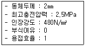
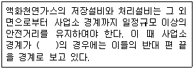
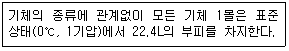

가스기능사 (2016-04-02 기출문제)
1과목: 가스안전관리
1. 다음 중 전기설비 방폭구조의 종류가 아닌 것은?
- 접지 방폭구조
- 유입 방폭구조
- 압력 방폭구조
- 안전증 방폭구조
(정답률: 74%)

2. 다음 중 특정고압가스에 해당되지 않은 것은?
- 이산화탄소
- 수소
- 산소
- 천연가스
(정답률: 69%)
3. 내부용적이 25000L인 액화산소 저장탱크의 저장능력은 얼마인가? (단, 비중은 1.14이다.)
- 21930kg
- 24780kg
- 25650kg
- 28500kg
(정답률: 56%)
4. 배관의 설치방법으로 산소 또는 천연메탄을 수송하기 위한 배관과 이에 접속하는 압축기와의 사이에 반드시 설치하여야 하는 것은?
- 방파판
- 솔레노이드
- 수취기
- 안전밸브
(정답률: 63%)
5. 공정에 존재하는 위험요소와 비록 위험하지는 않더라도 공정의 효율을 떨어뜨릴 수 있는 운전상의 문제를 파악하기 위한 안전성 평가기법은?
- 안전성 검토(Safety Review)기법
- 예비위험성 평가(Preliminary Hazard Analysis)기법
- 사고예상 질문(What If Analysis)기법
- 위험과 운전분석(HAZOP)기법
(정답률: 77%)
6. 다음 특정설비 재검사 대상인 것은?
- 역화방지장치
- 차량에 고정된 탱크
- 독성가스 배관용 밸브
- 자동차용가스 자동주입기
(정답률: 66%)
7. 독성가스외의 고압가스 충전 용기를 차량에 적재하여 운반할 때 부착하는 경계표지에 대한 내용으로 옳은 것은?
- 적색글씨로 “위험 고압가스”라고 표시
- 황색글씨로 “위험 고압가스”라고 표시
- 적색글씨로 “주의 고압가스”라고 표시
- 황색글씨로 “주의 고압가스”라고 표시
(정답률: 80%)
8. LP 가스설비를 수리할 때 내부의 LP가스를 질소 또는 물로 치환하고, 치환에 사용된 가스나 액체를 공기로 재치환하여야 하는데, 이 때 공기에 의한 재치환 결과가 산소농도 측정기로 측정하여 산소농도가 얼마의 범위 내에 있을 때까지 공기로 재치환하여야 하는가?
- 4~6%
- 7~11%
- 12~16%
- 18~22%
(정답률: 76%)
9. 고압가스특정제조시설 중 도로 밑에 매설하는 배관의 기준에 대한 설명으로 틀린 것은?
- 시가지의 도로 밑에 배관을 설치하는 경우에는 보호판을 배관의 정상부로부터 30㎝ 이상 떨어진 그 배관의 직상부에 설치한다.
- 배관은 그 외면으로부터 도로의 경계와 수평거리로 1m 이상을 유지한다.
- 배관은 원칙적으로 자동차 등의 하중의 영향이 적은 곳에 매설한다.
- 배관은 그 외면으로부터 도로 밑의 다른 시설물과 60㎝ 이상의 거리를 유지한다.
(정답률: 57%)
10. 공기보다 비중이 가벼운 도시가스의 공급시설로서 공급시설이 지하에 설치된 경우의 통풍구조의 기준으로 틀린 것은?
- 통풍구조는 환기구를 2방향 이상 분산하여 설치한다.
- 배기구는 천장면으로부터 30㎝ 이내에 설치한다.
- 흡입구 및 배기구의 관경은 500㎜ 이상으로 하되, 통풍이 양호하도록 한다.
- 배기가스 방출구는 지면에서 3m 이상의 높이에 설치하되, 화기가 없는 안전한 장소에 설치한다.
(정답률: 61%)
11. 다음 중 폭발한계의 범위가 가장 좁은 것은?
- 프로판
- 암모니아
- 수소
- 아세틸렌
(정답률: 84%)
12. 도시가스 사용시설에서 정한 액화가스란 상용의 온도 또는 섭씨 35도의 온도에서 압력이 얼마 이상이 되는 것을 말하는가?
- 0.1MPa
- 0.2MPa
- 0.5MPa
- 1MPa
(정답률: 56%)
13. 염소가스 저장탱크의 과충전 방지장치는 가스 충전량이 저장탱크의 내용적의 몇 %를 초과할 때 가스충전이 되지 않도록 동작하는가?
- 60%
- 80%
- 90%
- 95%
(정답률: 80%)
14. 도시가스사고의 사고 유형이 아닌 것은?
- 시설부식
- 시설 부적합
- 보호포 설치
- 연결부 이완
(정답률: 87%)
15. 가연성가스 저온저장탱크 내부의 압력이 외부의 압력보다 낮아져 저장탱크가 파괴되는 것을 방지하기 위한 조치로서 갖추어야 할 설비가 아닌 것은?
- 압력계
- 압력 경보설비
- 정전기 제거설비
- 진공 안전밸브
(정답률: 73%)
16. 일반 도시가스 배관 중 중압 이하의 배관과 고압배관을 매설하는 경우 서로간의 거리를 몇 m 이상을 유지하여야 하는가?
- 1
- 2
- 3
- 5
(정답률: 58%)
17. 초저온 용기의 단열 성능시험용 저온액화가스가 아닌 것은?
- 액화아르곤
- 액화산소
- 액화공기
- 액화질소
(정답률: 64%)
18. 고압가스 판매소의 시설기준에 대한 설명으로 틀린 것은?
- 충전용기의 보관실은 불연재료를 사용한다.
- 가연성가스·산소 및 독성가스의 저장실은 각각 구분하여 설치한다.
- 용기보관실 및 사무실은 부지를 구분하여 설치한다.
- 산소, 독성가스 또는 가연성가스를 보관하는 용기보관실의 면적은 각 고압가스별로 10m2 이상으로 한다.
(정답률: 64%)
19. 운전 중인 액화석유가스 충전설비의 작동상황에 대하여 주기적으로 점검하여야 한다. 점검주기는? (단, 철망 등이 부착되어 있지 않은 것으로 간주한다.)
- 1일에 1회 이상
- 1주일에 1회 이상
- 3월에 1회 이상
- 6월에 1회 이상
(정답률: 79%)
20. 재검사 용기 및 특정설비의 파기방법으로 틀린 것은?
- 잔가스를 전부 제거한 후 절단한다.
- 절단 등의 방법으로 파기하여 원형으로 가공할 수 없도록 한다.
- 파기 시에는 검사장소에서 검사원 입회하에 사용자가 실시할 수 있다.
- 파기 물품은 검사 신청인이 인수시한 내에 인수하지 아니한 때도 검사인이 임의로 매각처분하면 안 된다.
(정답률: 73%)
21. 도시가스배관이 굴착으로 20m이상이 노출되어 누출가스가 체류하기 쉬운 장소일 때 가스누출경보기는 몇 m 마다 설치해야 하는가?
- 5
- 10
- 20
- 30
(정답률: 61%)
22. 시안화수소의 중합폭발을 방지하기 위하여 주로 사용할 수 있는 안정제는?
- 탄산가스
- 황산
- 질소
- 일산화탄소
(정답률: 63%)
23. 고압가스 용접용기 동체의 내경은 약 몇 mm인가?

- 190mm
- 290mm
- 660mm
- 760mm
(정답률: 47%)
24. 고압가스관련법에서 사용되는 용어의 정의에 대한 설명 중 틀린 것은?
- 가연성가스라 함은 공기 중에서 연소하는 가스로서 폭발한계의 하한이 10% 이하인 것과 폭발한계의 상한과 하한의 차가 20% 이상인 것을 말한다.
- 독성가스라 함은 인체에 유해한 독성을 가진 가스로서 허용농도가 100만분의 100이하인 것을 말한다.
- 액화가스라 함은 가압·냉각 등의 방법에 의하여 액체 상태로 되어 있는 것으로서 대기압에서의 비점이 섭씨 40도 이하 또는 상용의 온도 이하인 것을 말한다.
- 초저온저장탱크라 함은 섭씨 영하 50도 이하의 저장탱크로서 단열재로 피복하거나 냉동설비로 냉각하는 등의 방법으로 저장탱크내의 가스온도가 상용의 온도를 초과하지 아니하도록 한 것을 말한다.
(정답률: 82%)
25. 다음 고압가스 압축작업 중 작업을 즉시 중단해야 하는 경우인 것은?
- 산소 중의 아세틸렌, 에틸렌 및 수소의 용량합계가 전체 용량의 2% 이상인 것
- 아세틸렌 중의 산소용량이 전체 용량의 1% 이하의 것
- 산소 중의 가연성가스(아세틸렌, 에틸렌 및 수소를 제외한다)의 용량이 전체 용량의 2% 이하의 것
- 시안화수소중의 산소용량이 전체 용량의 2% 이상의 것
(정답률: 58%)
26. 다음 중 가스사고를 분류하는 일반적인 방법이 아닌 것은?
- 원인에 따른 분류
- 사용처에 따른 분류
- 사고형태에 따른 분류
- 사용자의 연령에 따른 분류
(정답률: 88%)
27. 고압가스 저장시설에 설치하는 방류둑에는 계단, 사다리 또는 토사를 높이 쌓아올림 등에 의한 출입구를 둘레 몇 m 마다 1개 이상을 두어야 하는가?
- 30
- 50
- 75
- 100
(정답률: 71%)
28. LPG용기 및 저장탱크에 주로 사용되는 안전밸브의 형식은?
- 가용전식
- 파열판식
- 중추식
- 스프링식
(정답률: 66%)
29. 가스 충전용기 운반 시 동일 차량에 적재할 수 없는 것은?
- 염소와 아세틸렌
- 질소와 아세틸렌
- 프로판과 아세틸렌
- 염소와 산소
(정답률: 76%)
30. 다음 ( )안에 들어갈 수 있는 경우로 옳지 않은 것은?

- 산
- 호수
- 하천
- 바다
(정답률: 77%)
2과목: 가스장치 및 기기
31. 비중이 0.5인 LPG를 제조하는 공장에서 1일 10만L를 생산하여 24시간 정치 후 모두 산업현장으로 보낸다. 이 회사에서 생산하는 LPG를 저장하려면 저장용량이 5톤인 저장탱크 몇 개를 설치해야 하는가?
- 2
- 5
- 7
- 10
(정답률: 56%)
32. 고압용기나 탱크 및 라인(line) 등의 퍼지(perge)용으로 주로 쓰이는 기체는?
- 산소
- 수소
- 산화질소
- 질소
(정답률: 78%)
33. 고압가스제조소의 작업원은 얼마의 기간 이내에 1회 이상 보호구의 사용훈련을 받아 사용방법을 숙지하여야 하는가?
- 1개월
- 3개월
- 6개월
- 12개월
(정답률: 73%)
34. LPG기화장치의 작동원리에 따른 구분으로 저온의 액화가스를 조정기를 통하여 감압한 후 열교환기에 공급해 강제 기화시켜 공급하는 방식은?
- 해수가열 방식
- 가온감압 방식
- 감압가열 방식
- 중간 매체 방식
(정답률: 81%)
35. 도시가스사업법령에서는 도시가스를 압력에 따라 고압, 중압 및 저압으로 구분하고 있다. 중압의 범위로 옳은 것은? (단, 액화가스가 기화되고 다른 물질과 혼합되지 않은 경우로 가정한다.)
- 0.1MPa 이상, 1MPa 미만
- 0.2MPa 이상, 1MPa 미만
- 0.1MPa 이상, 0.2MPa 미만
- 0.01MPa 이상, 0.2MPa 미만
(정답률: 48%)
36. 가연성가스 누출검지 경보장치의 경보농도는 얼마인가?
- 폭발 하한계 이하
- LC50 기준농도 이하
- 폭발 하한계 1/4 이하
- TLV-TWA 기준농도 이하
(정답률: 73%)
37. 내용적 47L인 LP가스 용기의 최대 충전량은 몇 kg인가? (단, LP가스 정수는 2.35 이다.)
- 20
- 42
- 50
- 220
(정답률: 70%)
38. 부식성 유체나 고점도 유체 및 소량의 유체 측정에 가장 적합한 유량계는?
- 차압식 유량계
- 면적식 유량계
- 용적식 유량계
- 유속식 유량계
(정답률: 55%)
39. LP가스 이송설비 중 압축기에 의한 이송방식에 대한 설명으로 틀린 것은?
- 베이퍼록 현상이 없다.
- 잔가스 회수가 용이하다.
- 펌프에 비해 이송시간이 짧다.
- 저온에서 부탄가스가 재액화되지 않는다.
(정답률: 65%)
40. 공기, 질소, 산소 및 헬륨 등과 같이 임계온도가 낮은 기체를 액화하는 액화사이클의 종류가 아닌 것은?
- 구데 공기액화사이클
- 린데 공기액화사이클
- 필립스 공기액화사이클
- 캐스케이드 공기액화사이클
(정답률: 57%)
41. 다기능 가스안전계량기에 대한 설명으로 틀린 것은?
- 사용자가 쉽게 조작할 수 있는 테스트차단 기능이 있는 것으로 한다.
- 통상의 사용 상태에서 빗물, 먼지 등이 침입할 수 없는 구조로 한다.
- 차단밸브가 작동한 후에는 복원조작을 하지 아니하는 한 열리지 않는 구조로 한다.
- 복원을 위한 버튼이나 레버 등은 조작을 쉽게 실시 할 수 있는 위치에 있는 것으로 한다.
(정답률: 62%)
42. 계측기기의 구비조건으로 틀린 것은?
- 설비비 및 유지비가 적게 들 것
- 원거리 지시 및 기록이 가능할 것
- 구조가 간단하고 정도가 낮을 것
- 설치장소 및 주위조건에 대한 내구성이 클 것
(정답률: 76%)
43. 압축기에서 두압이란?
- 흡입 압력이다.
- 증발기 내의 압력이다.
- 피스톤 상부의 압력이다.
- 크랭크 케이스 내의 압력이다.
(정답률: 81%)
44. 반밀폐식 보일러의 급·배기설비에 대한 설명으로 틀린 것은?
- 배기통의 끝은 옥외로 뽑아낸다.
- 배기통의 굴곡수는 5개 이하로 한다.
- 배기통의 가로 길이는 5m 이하로서 될 수 있는 한 짧게 한다.
- 배기통의 입상높이는 원칙적으로 10m 이하로 한다.
(정답률: 68%)
45. 흡입압력이 대기압과 같으며 최종압력이 15kgf/cm2·g인 4단 공기압축기의 압축비는 약 얼마인가 ? (단, 대기압은 1kgf/cm2 로 한다.)
- 2
- 4
- 8
- 16
(정답률: 35%)
3과목: 가스일반
46. 순수한 것은 안정하나 소량의 수분이나 알칼리성 물질을 함유하면 중합이 촉진되고 독성이 매우 강한 가스는?
- 염소
- 포스겐
- 황화수소
- 시안화수소
(정답률: 61%)
47. 다음 중 비점이 가장 높은 가스는?
- 수소
- 산소
- 아세틸렌
- 프로판
(정답률: 50%)
48. 단위질량인 물질의 온도를 단위온도차 만큼 올리는데 필요한 열량을 무엇이라고 하는가?
- 일률
- 비열
- 비중
- 엔트로피
(정답률: 82%)
49. LNG의 성질에 대한 설명 중 틀린 것은?
- LNG가 액화되면 체적이 약 1/600로 줄어든다.
- 무독, 무공해의 청정가스로 발열량이 약 9500kcal/m3정도이다.
- 메탄을 주성분으로 하며 에탄, 프로판 등이 포함되어 있다.
- LNG는 기체 상태에서는 공기보다 가벼우나 액체 상태에서는 물보다 무겁다.
(정답률: 68%)
50. 압력에 대한 설명 중 틀린 것은?
- 게이지압력은 절대압력에 대기압을 더한 압력이다.
- 압력이란 단위 면적당 작용하는 힘의 세기를 말한다.
- 1.0332kg/cm2의 대기압을 표준대기압이라고 한다.
- 대기압은 수은주를 76㎝ 만큼의 높이로 밀어 올릴 수 있는 힘이다.
(정답률: 74%)
51. 프로판을 완전연소시켰을 때 주로 생성되는 물질은?
- CO2, H2
- CO2, H2O
- C2H4, H2O
- C4H10, CO
(정답률: 73%)
52. 요소비료 제조 시 주로 사용되는 가스는?
- 염화수소
- 질소
- 일산화탄소
- 암모니아
(정답률: 66%)
53. 수분이 존재할 때 일반 강재를 부식시키는 가스는?
- 황화수소
- 수소
- 일산화탄소
- 질소
(정답률: 73%)
54. 폭발위험에 대한 설명 중 틀린 것은?
- 폭발범위의 하한값이 낮을수록 폭발위험은 커진다.
- 폭발범위의 상한값과 하한값의 차가 작을수록 폭발위험은 커진다.
- 프로판보다 부탄의 폭발범위 하한값이 낮다.
- 프로판보다 부탄의 폭발범위 상한값이 낮다.
(정답률: 70%)
55. 액체가 기체로 변하기 위해 필요한 열은?
- 융해열
- 응축열
- 승화열
- 기화열
(정답률: 84%)
56. 부탄 1Nm3을 완전연소시키는데 필요한 이론 공기량은 약 몇 Nm3 인가? (단, 공기 중의 산소농도는 21v%이다.)
- 5
- 6.5
- 23.8
- 31
(정답률: 30%)
57. 온도 410℉ 을 절대온도로 나타내면?
- 273K
- 483K
- 512K
- 612K
(정답률: 60%)
58. 도시가스에 사용되는 부취제 중 DMS의 냄새는?
- 석탄가스 냄새
- 마늘 냄새
- 양파 썩는 냄새
- 암모니아 냄새
(정답률: 76%)
59. 다음에서 설명하는 기체와 관련된 법칙은?

- 보일의 법칙
- 헨리의 법칙
- 아보가드로의 법칙
- 아르키메데스의 법칙
(정답률: 78%)
60. 내용적 47L 인 용기에 C3H8 15kg이 충전되어 있을 때 용기 내 안전공간은 약 몇 % 인가? (단, C3H8의 액 밀도는 0.5kg/L이다.)
- 20
- 25.2
- 36.1
- 40.1
(정답률: 47%)